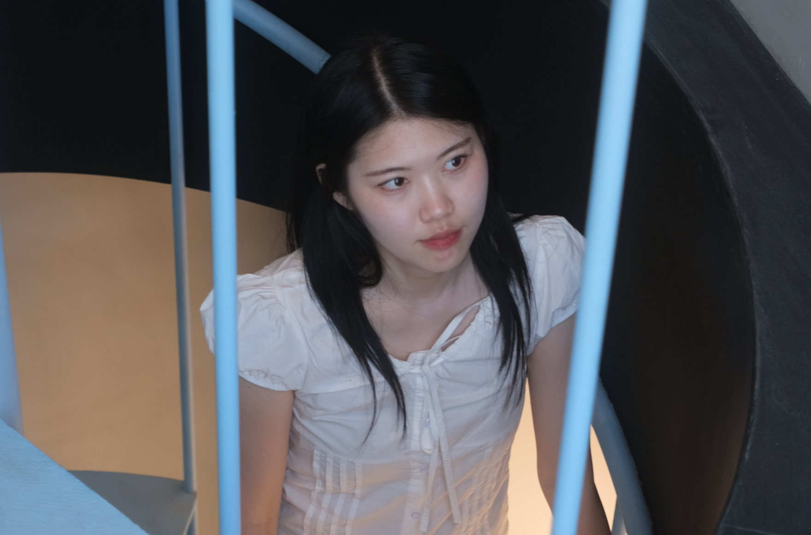

A web publisher who puts meaning into every detail
I’m Gayoung Ryu.
I find the process of generating my own ideas and building websites both exciting and meaningful.

Gayoung Ryu
Gayoung Ryu
2000.02.16
ru01ga14@gmail.com